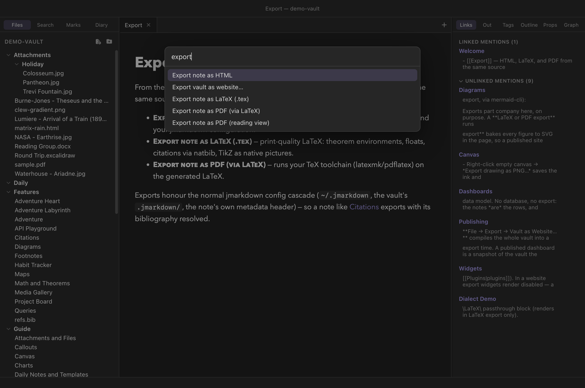
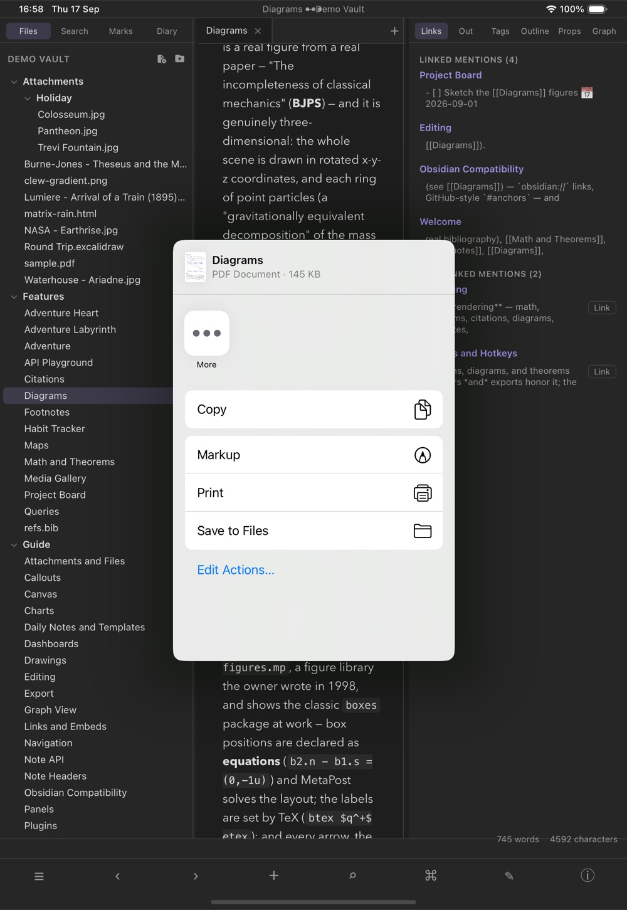

Sharing your work
Exporting notes
Because Clew's reading mode is the jmarkdown typesetting engine — a dual-output engine that compiles the same source to HTML and to LaTeX — exporting is not an afterthought bolted onto a preview. Any note exports to a standalone HTML page, to print-quality LaTeX source, or, when a TeX toolchain is installed, straight to a typeset PDF. The mathematics, theorem environments, citations, and diagrams you see in reading mode survive into print, because print was always one of the engine's two native targets.
Where the commands live
The export commands for the current note sit under File → Export:
- As HTML…
- As LaTeX…
- As PDF (via LaTeX)…
- As PDF (reading view)…
(The last item in that submenu, Vault as Website…, exports the whole vault at once and has its own chapter.) The same four commands are in the command palette (⌘P) as Export note as HTML, Export note as LaTeX (.tex), Export note as PDF (via LaTeX) and Export note as PDF (reading view), and like every command they can be given hotkeys in the hotkey editor. All four act on the active note's tab and need a note to be open.

Each command opens a save dialog. The suggested destination is the vault
root, with the note's own name and the right extension
(.html, .tex, or .pdf); you can
point it anywhere on disk. Nothing is written until you confirm the
dialog, and cancelling it cancels the export.

One source, three outputs
The point of exporting through the engine — rather than only printing the preview to PDF, as most note apps do — is that each of these formats is generated natively from the Markdown source:
- HTML produces a complete, standalone web page using the engine's own page templates. Mathematics is typeset, citations are resolved against your bibliography, diagrams render, footnotes and cross-references link up. It is a document you can mail to someone or drop on a server as-is.
- LaTeX produces real LaTeX source: theorem
environments become
\begin{theorem}, displayed equations keep their AMS numbering, citations go through natbib, figures become floats, and TikZ pictures are emitted as native TikZ — not as embedded screenshots. The.texfile is yours to edit, include in a larger document, or hand to a journal. - PDF is the LaTeX route carried one step further:
Clew generates the
.texand then runs your TeX toolchain on it. The result is a typeset page in the full LaTeX sense — proper line breaking, real fonts, print-ready mathematics.
Two PDFs, for two different wishes
As PDF (reading view) is the other thing people mean by "export to PDF": not a typeset paper, but this, on paper — the note exactly as the reading pane draws it, callout colours, syntax highlighting, mermaid diagrams, editable-looking tables and all. Clew prints the very same rendered page the app shows you.
Pick between them by what you want the document to be. The LaTeX PDF is for a paper, a handout, anything whose typography should be the argument's equal — and it needs a TeX toolchain. The reading-view PDF needs nothing installed, takes a second, and looks like Clew: right for circulating lecture notes, sending a colleague what is on your screen, or keeping a copy of a note as you had it.
Three details are worth knowing. It prints in the light theme whatever the app is wearing, because the engine's own styling is written for a light page and a PDF is a paper artifact. Paper size comes from Settings → Appearance → PDF paper size (A4 by default; US Letter, Legal and Tabloid are there too). And a folded embed prints folded — "as displayed" is the promise, so if you want an embed's contents in the PDF, unfold it first.
This is the practical payoff of the design commitment described in the
introduction: a note about, say, a
convergence proof — with numbered equations, a theorem, a couple of
citations from your .bib file — renders in the app, exports
as a web page, and typesets as a paper, all from the file you were
editing a minute ago. Nothing needs to be rewritten for print.
Exports use your jmarkdown configuration
Here is the subtle point of this chapter, and it is worth understanding
because it explains everything else about how exports behave. When Clew
renders a note for reading mode, it runs the engine with a private
configuration of its own — one that loads Clew's wikilink and fence
extensions, points at local assets, and uses Clew's preview template.
When Clew exports a note, it deliberately does not use that
configuration. Instead, the export runs the engine in a fresh process
whose working directory is the note's own folder, which
means the engine's normal configuration cascade applies: the built-in
defaults, then your global ~/.jmarkdown configuration, then
any .jmarkdown/ folder next to the note.
In other words, an export behaves exactly as if you had run the jmarkdown command-line tool on the file yourself. That is a feature:
- Exports use the engine's own page and LaTeX templates — including any customisations you have made to them — rather than Clew's app-oriented preview template.
- Your bibliography setup, citation style, and other engine options
from
~/.jmarkdownare honoured. - Power users can keep a
.jmarkdown/configuration folder next to a set of notes to control precisely how those notes export — different templates for different projects, extra engine extensions, LaTeX preamble additions — without touching how the notes look inside Clew. - A note's own metadata header still applies, as it does in the preview.
One per-vault setting does carry over: if the vault is set to standard Markdown syntax (the normal syntax toggle in Settings → This vault, described in the dialect chapter), exports honour it, so a vault written in ordinary Markdown exports as ordinary Markdown.
[[wikilinks]] are not turned
into links (they come out as written), ![[…]] embeds are
not expanded, and the ```mermaid, ```leaflet,
and ```query fences render as plain code blocks. The
engine's native forms still work — :::mermaid or
@begin(mermaid) blocks export fine, and everything in
math,
citations, and the engine's own
diagram machinery is native. A note you
intend to publish as a paper is best written leaning on the engine's
own vocabulary; a note leaning on Clew's vault features is better
shared via website export, which does
load all of Clew's extensions.
[[chapter.md]]
standing alone on a line: file inclusion, and it is on by default in
the engine's configuration. In an export, such a line splices the
named file's contents into the document — useful on purpose for
book-style projects (it is the same behaviour the per-vault
jmarkdown project setting brings into the preview), but
surprising if you meant it as a mere link. Add
File inclusion: false to a note's metadata header or a
.jmarkdown/ config next to the note to switch it off.
PDF export and the TeX toolchain
PDF export needs a TeX installation on your machine — Clew does not
bundle one, because a TeX distribution is enormous and you likely
already have one if you want this feature. On macOS, MacTeX is the
usual choice.
Clew looks for latexmk first and falls back to
pdflatex, checking the standard installation directories
(/Library/TeX/texbin, /usr/local/bin, and
/opt/homebrew/bin). With latexmk available,
reruns for cross-references and bibliographies are handled
automatically, which is why it is preferred.
A related detail that saves real head-scratching: apps launched from the
Dock or Finder inherit a minimal PATH that usually lacks
the TeX directories, which is why "it works in my terminal but not in
the app" is such a common failure elsewhere. Clew sidesteps it by
extending the PATH it hands to every engine process with
the common TeX and Homebrew locations
(/Library/TeX/texbin, /opt/homebrew/bin,
/usr/local/bin). This matters for anything that shells out
to a TeX program by name: the latex run behind this
export, and jmarkdown's own diagram tools when an export uses them.
(TikZ and MetaPost figures in the preview
need none of it — those engines ship with Clew, as WebAssembly.) On
Windows, TeX installers put themselves on the PATH, so no
extension is needed.
Mechanically, a PDF export first writes the intermediate
.tex file next to your chosen destination — deliberately,
so that relative graphics paths resolve — and then compiles it there.
The compiler runs with a two-minute timeout, in nonstop mode. One
pragmatic wrinkle: pdflatex exits with a non-zero status on
mere warnings, so Clew accepts the run as successful whenever the PDF
actually materialised.
.tex (and the
compiler's .log and auxiliary files) remain next to the
PDF. If a compile fails or the output looks wrong, open the
.tex and run latexmk -pdf on it yourself:
you get the full compiler output, and you can fix or restyle the LaTeX
directly. Exporting to LaTeX first and compiling by hand is exactly
the same pipeline, one step at a time. If you dislike the auxiliary
clutter, export into a scratch folder and copy out the PDF.
Troubleshooting
- "No TeX toolchain found (latexmk/pdflatex)"
- Clew could not find
latexmkorpdflatexin any of the directories listed above. Install MacTeX (or your platform's TeX distribution) and try again; no restart of Clew should be needed if the tools land in one of the standard locations. - The PDF was not produced
- The LaTeX compile failed hard enough that no PDF appeared. Export the same note as LaTeX and compile it in a terminal — the compiler's error messages will name the offending line. Common causes are a missing LaTeX package and raw HTML in the note, which has no LaTeX equivalent.
- Citations show as question marks in the PDF
- The bibliography did not resolve. Check that the note's
bibliography setup (see Citations and
bibliographies) points at a
.bibfile the export can reach from the note's own folder — remember that exports run from the note's directory, not from wherever Clew was started. - The export looks different from reading mode
- Almost always the configuration-cascade point above: the preview runs with Clew's extensions and per-vault settings, the export runs with yours. Wikilinks, Obsidian-style fences, and query blocks are the usual suspects.
- The exported HTML page needs the network
- Unlike Clew's preview, which uses only local assets, the engine's own HTML template may reference assets such as MathJax from a CDN. The page is standalone in the sense of being a single file, but rendering mathematics in the browser can require a network connection, depending on your jmarkdown template configuration.
Reference
| Format | Menu item | Palette command | Produces | Requires |
|---|---|---|---|---|
| HTML | File → Export → As HTML… | Export note as HTML | A standalone .html page from the engine's own
templates, at the location you choose. |
Nothing extra. |
| LaTeX | File → Export → As LaTeX… | Export note as LaTeX (.tex) | A .tex source file; relative graphics resolve
from where it is saved. |
Nothing extra (a TeX installation to compile it later). |
| File → Export → As PDF (via LaTeX)… | Export note as PDF (via LaTeX) | A typeset .pdf; the intermediate .tex
and log files remain alongside it. |
latexmk or pdflatex on the machine. |
| Fact | Detail |
|---|---|
| Working directory | The note's own folder — the normal
jmarkdown config cascade applies (~/.jmarkdown, then a
.jmarkdown/ next to the note, then the note's metadata
header). |
| Not applied | Clew's preview configuration: wikilink and
embed rendering, ```mermaid/```leaflet/```query
fences, local preview assets. |
| Applied | The vault's standard-Markdown-syntax setting; the note's metadata header; all engine-native features. |
| TeX search path | /Library/TeX/texbin,
/usr/local/bin, /opt/homebrew/bin
(latexmk preferred over pdflatex); the same
directories are appended to PATH for every engine
process. |
| Compile behaviour | Nonstop mode, two-minute timeout; accepted as success if the PDF exists even when the compiler returned warnings. |
See also
- Publishing as a website — exporting the whole vault, with all of Clew's extensions applied.
- How rendering works — what the preview pipeline does differently, and why.
- Math and theorems and Citations and bibliographies — the features that make print export worth having.
- The jmarkdown dialect — including the per-vault standard-syntax switch that exports honour.